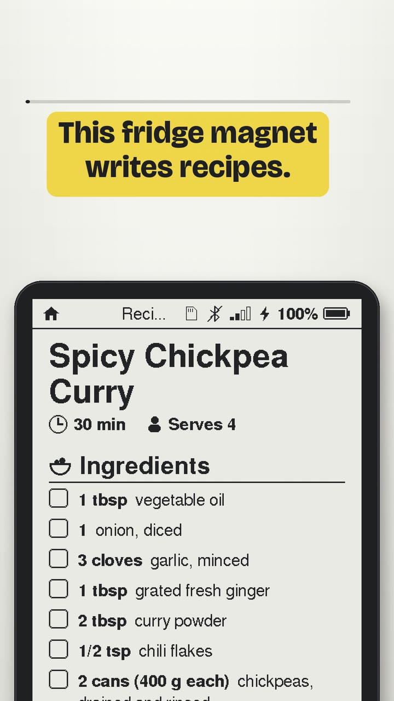

Blog ·
AI recipes by voice: ask the fridge door what’s for dinner
Recipes is the {{NAME}} app you talk to. Say a dish to the board, or type it, and the AI writes the recipe: the time, how many it serves, the ingredients with tick boxes, the numbered steps and a few tips. It opens on the board a moment later and stays saved there.



Watch · 0:33
Recipes in 33 seconds
- Tap Say a dish and ask out loud
- The request, played to the board’s own microphone and heard word for word
- The AI writing it, in about ten seconds, on your OpenAI key
- The time, how many it serves and an amount for every ingredient
- Ingredients ticked off, then the method a page at a time and a tip to finish
- Every recipe saved on the board, up to 30
Filmed from the board’s own screens. It opens on YouTube; nothing from YouTube loads on this page.
What it does
Open Recipes and tap Say a dish, then say what you’d like to cook, “a quick vegetarian pasta for two”, and tap again when you’re done (or hold OK, speak, and let go). Type it opens the keyboard instead, and its microphone key dictates. While the AI writes, a Thinking… card says Writing a recipe · tap to cancel, and a tap on the list, or OK, cancels it.
What comes back is always the same shape: a title, the time, how many it serves, the ingredients with their amounts, the numbered steps of the method, and tips when there are any. The recipe is written in the board’s language.
It is shown a page at a time. Swipe up or down, or press OK, for the next page; Back (or a swipe down on the first page) returns to the list. Tap an ingredient to tick it off while you cook; the ticks stay until you open another recipe. A recipe left open is still open when you come back from another app.
Held upright, as in these screenshots, the text is 12 pt. Turn the board sideways and the recipe is drawn in large type, 18 pt, with fewer lines to a page, for reading from across the kitchen. There is no capture of the sideways view from this run, so it isn’t pictured here.


A real run, timed
The Short and these screenshots come from one run on a board running {{NAME}} 1.6, held upright and set to English. The request was a recorded voice (made with a text-to-speech voice, so it can be played again the same way) played from a laptop speaker into the board’s own microphone:
“A spicy chickpea curry for four, ready in thirty minutes.”
From the board’s log:
- The microphone recorded for 8.9 seconds. That length was fixed by the test command that started the recording; in normal use you tap to stop when you’re done.
- Speech to text took 3.9 seconds and heard it word for word: “A spicy chickpea curry for four, ready in 30 minutes.”
- The AI answered in 5.7 seconds, with a recipe of about 1,200 characters.
- The board saved it as “Spicy Chickpea Curry”, 30 minutes, serves 4, and opened it, about 9.6 seconds after the recording ended.
It asked for four and thirty minutes, and that is what came back. Your timings will vary with your connection and with OpenAI’s servers at the time. The board can’t take a screenshot while it records, so the Listening card below was drawn with a test command that shows the same card; the Thinking card was captured live, during this run.


Saved recipes
Every recipe is saved on the board as soon as it arrives, in its own flash, and the list shows them newest first with the time, how many each serves and the day it was saved. The board keeps up to 30; the 31st replaces the oldest. To remove one, open it and tap Delete, then tap it again when it says Sure?


When something goes wrong, the screen says what, in plain words: AI key rejected: it’s expired or wrong, or The AI’s recipe came back garbled. Try again. The board reads the AI’s answer carefully either way: the model is asked for strict JSON in a fixed shape, and stray words around it, numbers sent as text and the like are tidied up, everything is capped in length, and characters the board’s fonts don’t have become a look-alike.
Privacy and cost
Recipes needs an OpenAI API key of your own; {{NAME}} has no server and no account of its own. When you say a dish, the recording goes from the board to OpenAI for speech to text, and the words then go to the model (gpt-5-mini unless you choose another) to write the recipe, both on your key. A typed request skips the speech to text. Sent this way, the request goes to nothing else, and the recipe that comes back is kept on the board.
If you’d rather not have the board talk to OpenAI directly, the setup app can point it at a server you run on your own network that passes the requests on; what that server keeps is then up to you.
The cost is OpenAI’s, billed to the account the key belongs to, at its prices for the models used: one speech-to-text request for a spoken dish, and one model request for each recipe. Without a key, Recipes can’t write anything, and every other app works the same.
Set it up
- Install {{NAME}} on the reTerminal Sticky: the install guide walks through it.
- Open the setup app in Chrome or Edge and connect to the board over USB or Bluetooth.
- Paste your OpenAI API key (from platform.openai.com, under API keys) and send it to the board. The key goes straight from the page to the board.
- Open Recipes on the board and tap Say a dish.
{{NAME}} is an independent, open-source firmware for the Seeed reTerminal Sticky. Not made by or affiliated with Seeed Studio.